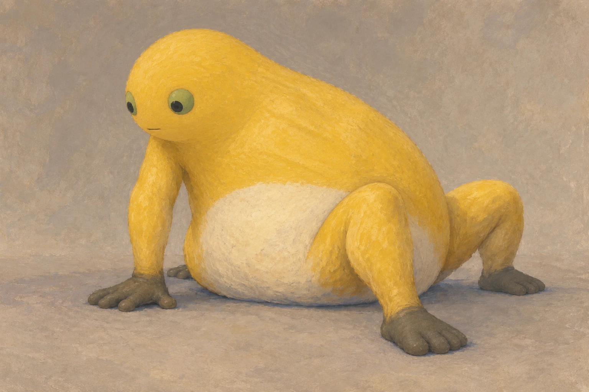
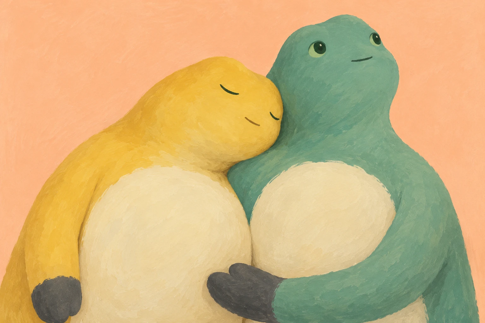
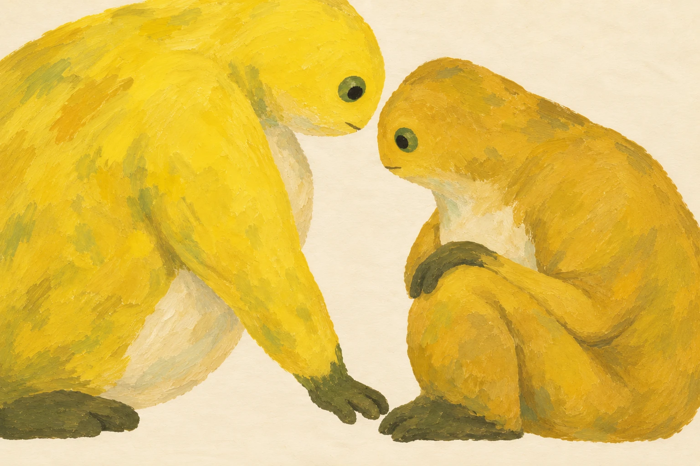
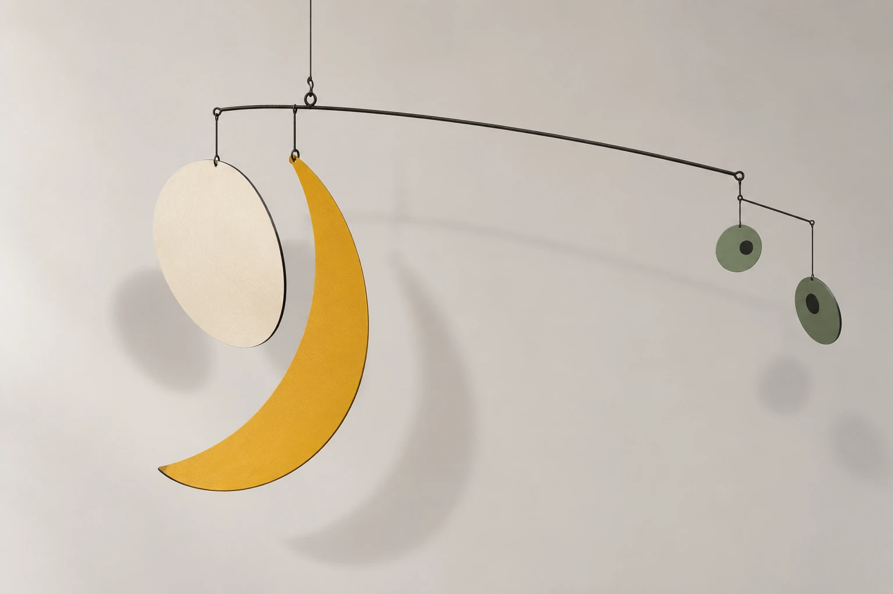
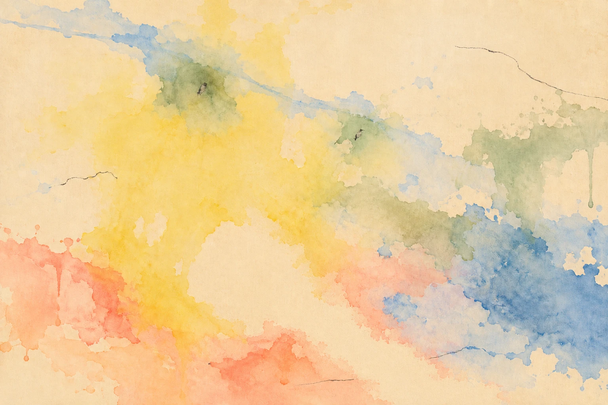

身体还贴着地
从掌根、肩窝与空隙，回看身体如何借力，以及哪些修改值得留下。
沿用已审定创作记录。配图位置与版本按文章原稿保留；P208、P209、P210、P211仅作为文章图版展示，本次未新增独立主展品。
本文章节
创作记录
《先把自己撑起来》里，左侧的掌根已经压平，手臂几乎推直，肩膀抬了起来。肚子却还铺在地上。奶油色腹片斜着沉下去，底下留着一条蓝灰色的接触带。起身发生在同一具身体的不同地方，进度各不相同。
先看这一点，再看它的脸。没有汗，没有咬紧的牙，也没有几道表示用力的短线。那张脸很安静，掌根和腹底已经把事情说清楚了。

这件画的第一版就有这组关系。问题出在别处：眼睛鼓出来，吻部向前伸，长脚趾摊开，熟悉的奶蛙变得像一只普通青蛙。第二版把吻部收回，眼睛放回脸上，浅色从喉部退到肚腹。修改时，近脚、远脚和掌指都跟着缩短了，头也更圆大。值得留下的是，几处贴地的接触还在，肩膀仍然往上，腹部仍然往下。修回角色的样子，没有把它重新修成一个轻松坐着的圆玩偶。
这次选择，可以和更早的一次失败放在一起看。
《背后只剩这一点空》原先想让两个背靠背的身体互相承重。第一版里，一黄一绿坐得安稳，腰后确实留出一道浅色楔隙，背部却没有被对方压出多少变化。第二版让黄身更明显地后仰，青绿手臂伸出去撑地，受力有了方向，但青绿身体下方多出了一只脚。两版都没有选作完成作品。多出来的脚不能靠“荒诞”两个字混过去；这一轮要看的恰好是身体怎样支撑身体，肢体关系一乱，问题就失去了依据。
到了《肩膀低下去一点》，画面裁到腹部，脚退出了视野。黄头斜靠进青绿肩窝，一只灰掌从下面搂托黄腹。上面的肩线和下面的手掌离得很近，观者也被带近了。灰掌还带着拥抱的松缓，两块腹片间预想的浅缝没有出现，不过重量已经能沿着头、肩和掌找到去处。这件画没有继续追修那条缝。

把这些选择并排看，会发现“再改一次”并没有固定答案。有时需要修回辨识度，有时该接受搂托比承托更松，有时就该停在失败稿。判断落在很小的地方：某一条轮廓是否让了下去，一只手有没有真正接住另一具身体。
接下来换一个看法，回看《中间还留着一点空》。两只奶蛙一高一低，额头快碰到，下面的指尖也快到脚边。中间的浅底由窄变宽，又收窄，最后通向画面下沿。第一版里它们隔得远，空白只是宽阔的背景；第二版收近后，空白才有了两边共同决定的形状。左臂同时被拉长，左足也扩大了。靠近牵动了身体比例，无法简单算作把两个人各挪一点。

如果顺着这片空白继续看，可以先看稍后的悬挂设想，再折回薄染。这里按画面关系排列，暂时离开作品编号的顺序。
《肚子近一点，眼睛远一点》把奶蛙拆成四片：黄色弯片、奶油腹片和两枚绿眼。腹片靠近吊点，眼睛被长杆送到很远的地方。细杆、薄边和墙影把距离撑开，黄色更像月牙，身体很难一次认全。这幅静态构图设想借鉴了Calder悬挂作品的不对称组织。右侧分枝还需要重新安排吊点，暂时让它停在纸上。

《黄色还没干透》借Frankenthaler《Mountains and Sea》的薄染与裸底关系，把辨认留得更轻。斜蓝穿过淡黄，积出两处绿晕，里面各有短黑痕。腹部原先是一块近乎封闭的浅色，第二版打开右下方，也断开经过这里的一小段炭线。浅底于是从腹内接回边缘。通道有些宽直，像一条浅河；看着看着，腹部会散掉，眼睛也只是颜色偶尔聚在一起的样子。

看到这里，再回到最初那个好笑的互联网梗。项目发起时吸引人的，正是那种荒诞：少儿动画里的形象经过集体模仿，在网络中被反复认出、挪用，慢慢像一个图腾。它也让发起者联想到达达。这是进入创作的一条私人线索，笑声一直留在里面。
反复画同一个形象以后，熟悉反而让细微变化更容易被发现。头还能变多圆，眼睛能离腹部多远，身体撤去以后，哪些颜色仍让人想起它？这些问题落到每次生成、比较和舍弃中，留下了一些稳定的倾向：把动作交给接触，把空白留出通路，容许角色暂时难认；需要修改时，先找到那处不能丢的支点。
再看开头那只奶蛙，手已经在撑了，肚子还贴着地。这一个动作，足够继续看一会儿。
作品档案
五件图像均为奶蛙主题非官方项目创作，AI辅助生成，2026年。图中的水粉、粉彩、薄染或金属为数字图像的视觉质感。
图1 P210《先把自己撑起来》v2
原创动作与构图；粉彩与水粉质感。
图2 P202《肩膀低下去一点》v1
原创场景与构图；水粉式色面。青绿身体为本件改色变体。
图3 P206《中间还留着一点空》v2
原创构图；粗笔触色面。
图4 P209《肚子近一点，眼睛远一点》v1
静态悬挂雕塑构图设想。结构研究参考：Alexander Calder，Lobster Trap and Fish Tail，1939，MoMA。
https://www.moma.org/collection/works/81621
图5 P208《黄色还没干透》v2
透明染色与细炭线质感。对话作品：Helen Frankenthaler，Mountains and Sea，1952。
https://www.frankenthalerfoundation.org/artworks/mountains-and-sea/details/all
文中另述 P197《背后只剩这一点空》v1、v2
两版均未入选，为失败研究稿；本篇主图不收录。
来源与阅读
- Alexander Calder · Lobster Trap and Fish Tail · MoMA ↗
P209静态悬挂构图的结构参考；本项目图像不是实体工程或承重验证。
资料核对日期： - Helen Frankenthaler · Mountains and Sea ↗
P208薄染与裸底关系的对话原作。
资料核对日期： - 项目角色出处记录 ↗
项目角色线索；不宣称角色IP原创或官方授权。
资料核对日期：